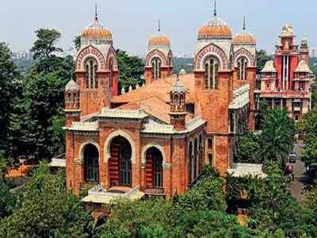

Home
About
Services
Contact
WELCOME TO UNIVERSITY OF MADRAS
The Public Petition dated 11-11-1839 initiated the establishment of Madras University. It was in January 1840 with Mr.George Norton as its President, that the University Board was constituted. In 1854 after a lapse of 14 years, the Government of India formulated a systematic educational policy for India and as a sequel to this on 5th September 1857 by an Act of Legislative Council of India, the University was established. The University was organised in the model of London University.
Madras University is the mother of almost all the old Universities of south India. The University area of jurisdiction has been confined to three districts of Tamil Nadu in recent years.
CAMPUS TOUR
